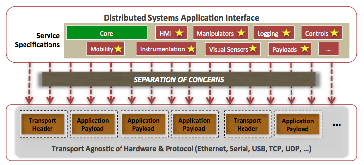
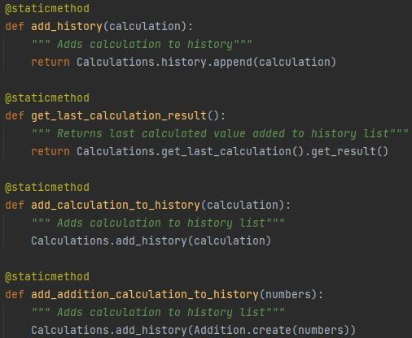
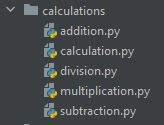
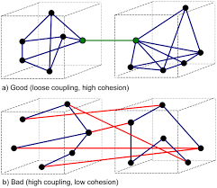

Calculator SoC
Example:

Separation of Concern - Separation of Concern attempts to apply an organizational pattern to coding structure by
binning behaviors based on concern. Where a concern is defined as a "distinct behavior
or piece of knowledge your software deals with". [1]
This distinct method for separating functions ensures that a program is not one endless block of code.
Functions -
For the calculator program, a distinct component of the refactoring process was weighted on the simplification of function design
and separation of repeated actions into callable methods. For example, the add_history method which simplifies appending the Calculations
class history list and is utilized repeatedly to simplify further functions such as get_last_calculation_result.

Modules -
For the calculator program, module separation further applied this philosophy. Two distinct sets of tasks were established for the program:
performing the calculation and storing the resultant in history. Structurally this is observed through the multiple directories
with the classes grouped by task similarity.

Continuing with Separation of Concerns, two concurrent processes are also pressured:
reducing coupling and heightening cohesion.
Coupling - Interdependency between software
modules.
Cohesion - How similar the elements within a module are to each
other.

For the Calculator program the reduction of coupling and increased cohesion is impressed through the Calculator class importing the Calculations class, which
handles all related history functions and imports the individual calculation classes for operation handling. This limits interdependencies for each class upon another
beyond singular calls to create a (Addition/Subtraction/Multiplication/Division) objects or return results. Most importantly the methods and class creations within
the Calculator program follow a logical flow and do not abruptly jump between classes (logical boundaries).